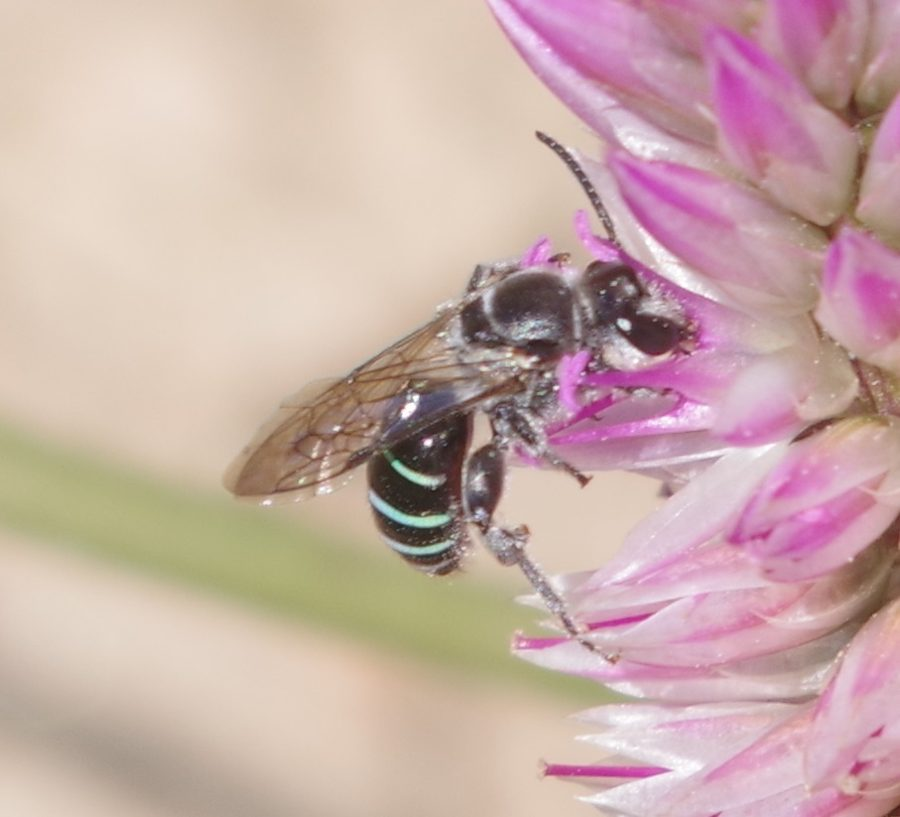

इलियट्स नोमिया बीElliot's Nomia Bee
Nomia ellioti · Halictidae · INS-0252

- Scientific name वैज्ञानिक नाम
- Nomia ellioti Smith, 1875
- Family कुल
- Halictidae
- Hindi हिंदी
- इलियट्स नोमिया बी
- Local names स्थानीय नाम
- elliots nomia bee, elliot ki nomia madhumakhi, nomia ellioti, halictid ground bee
- Status here यहाँ की स्थिति
- native
- Movement आवागमन
- Resident, here all year
- Known from कहाँ दर्ज
- Others have published records from the wider Awadh–Purvanchal plain, none yet from Basti–Ayodhya अवध–पूर्वांचल से दूसरों के प्रकाशित अभिलेख, बस्ती–अयोध्या से अभी नहीं
- IUCN IUCN
- not evaluated
- Review समीक्षा
- not yet reviewed
When to look कब देखें
Expected mainly in March, April, May, June, July, August, September, October. मुख्यतः मार्च, अप्रैल, मई, जून, जुलाई, अगस्त, सितंबर, अक्टूबर में अपेक्षित।
इलियट्स नोमिया बी / Elliot's Nomia Bee
Nomia ellioti Smith, 1875 — Halictidae
इलियट्स नोमिया बी — धूप से तपी सख्त मिट्टी में बिल बनाकर रहने वाली एक बेहद सुंदर और फुर्तीली एकांतवासी मधुमक्खी। इसके पेट पर चमकीले पन्ना-हरे और फिरोजी रंग की धातु जैसी चमकदार पट्टियां सजी होती हैं। यह दलहनी फसलों और घासों के फूलों पर जाकर उनका परागण करने में विशेष महारत रखती है।
Quick Identification त्वरित पहचान
| Feature | Description |
|---|---|
| Habit | Robust, fast-flying solitary ground-nesting bee foraging on legume flowers |
| Abdominal Bands | Gaster adorned with four brilliant opalescent emerald-green to turquoise enamel bands |
| Thorax | Densely covered in rich fulvous to golden-brown velvety pubescence |
| Legs | Heavily clothed in dense pale setae; hind legs modified for carrying pollen |
| Nesting | Vertical tunnels excavated into sun-baked clay or alkaline soil flats |
Field tip: Look along sunlit dry pathways or field borders for medium-sized bees visiting pea blossoms with dazzling iridescent green stripes glowing on their tails.
हिंदी — कैसे पहचानें: मध्यम आकार, सीने पर सुनहरे रोएं, और पेट पर चार बेहद खूबसूरत पन्ना-हरी व नीली चमकदार पट्टियां।
Morphology आकारिकी
Adult description: Medium-sized, robust halictid bee. Head broad across eyes, densely and finely punctured; clypeus convex, covered with pale golden-yellow hairs; antennae dark brown, scape with pale pubescence. Thorax stout, densely clothed on scutum and pleura with short, velvety fulvous-red to golden-brown pubescence. Legs stout, dark reddish-brown, densely clothed with long pale golden setae forming a prominent pollen-collecting brush on hind tibiae and basitarsi. Metasoma broad, sub-depressed; apical margins of tergites 1 to 4 exhibiting brilliant, broad enamel-like integumental bands of iridescent emerald-green, peacock-blue, or turquoise, completely hairless and shimmering in bright sun. Forewings clear hyaline with brown veins.
हिंदी: मध्यम आकार की मधुमक्खी जिसके पेट पर चार चमकदार हरी पट्टियां होती हैं।
Behaviour & Ecology व्यवहार और पारिस्थितिकी
- Legume Flower Tripping: Possesses great strength and dexterity to force open the keel petals of leguminous flowers, successfully tripping the stamens.
- Solitary Nesting in Hard Soil: Excavates deep vertical shafts in hard-packed dirt roads, field paths, and alkaline sodic flats.
- Communal Aggregations: Hundreds of individual females frequently nest side by side in favorable patches of soil, forming dense colonies.
- Rapid Swift Flight: Flies with remarkable speed and a sharp high buzzing sound, darting rapidly from bloom to bloom.
हिंदी: यह दलहनी फसलों के बंद फूलों को आसानी से खोलकर पराग निकालती है। यह सख्त रास्तों में सैकड़ों की संख्या में आसपास बिल बनाती है।
Life Cycle / Phenology जीवन चक्र
- Shaft Excavation: The female digs a deep vertical shaft in firm soil (Bingham 1897), creating lateral cells lined with a waterproof secretion.
- Pollen Loaf Provision: Shapes a flattened spherical loaf of firm legume pollen mixed with nectar in each cell.
- Brood Development: Lays an egg upon the provision; larva hatches and consumes the loaf over two weeks before transforming to prepupa.
- Seasonal Diapause: Passes the cool winter months as a dormant prepupa in subterranean cells, emerging as adults in warm spring.
हिंदी: मादा सख्त जमीन में गहरा बिल खोदती है और पराग का पेड़ा बनाकर अंडा देती है। बच्चा पराग खाकर अगली गर्मियों में निकलता है।
Host Plants or Prey आहार
- Legume Specialist: Feeds preferentially on flowers of pulses (chickpea, pigeon pea, green gram), sunn hemp, and dhaincha.
- Wild Flora: Visits wild clover, roadside indigo, and blooming bushes of ber and neem.
- Moisture Intake: Gathers moisture and dissolved mineral salts from wet alkaline puddle margins.
हिंदी: इसका मुख्य भोजन अरहर, मूंग, चना, सनई और ढैंचा के फूल हैं। यह नीम और जंगली झाड़ियों का रस भी पीती है।
Predators / Natural Enemies शत्रु
- Avian Predators: Bee-eaters, drongos, and common mynas wait near nesting aggregations to catch emerging bees.
- Blister Beetles: Triungulin larvae of Meloidae climb flowers to hitch a ride on foraging females back to their underground nests.
- Lizards: Indian garden lizards patrol bare paths where nest burrows are clustered.
हिंदी: मैना, भुजंगा और गिरगिट जमीन के बिलों के पास इनका शिकार करते हैं। तेलिया भृंग के नन्हे बच्चे इनके छत्तों को नष्ट करते हैं।
Agricultural / Human Relevance कृषि प्रासंगिकता
- Outstanding Pulse Pollinator: Crucial natural asset for pulse farmers in Uttar Pradesh; dramatically improves pod set and yield in legume crops.
- Hard Ground Nester: Tolerates and actually prefers hard-packed dry soil of village bunds and paths where other bees cannot nest.
- Completely Gentle: Non-aggressive solitary bee; stings are very rare, exceedingly mild, and harmless to farmers.
हिंदी: यह दालों की पैदावार बढ़ाने में मधुमक्खियों से भी अधिक कुशल मानी जाती है। यह किसानों की सबसे अच्छी मित्र है और कभी काटती नहीं।
Expected Locally स्थानीय रूप से अपेक्षित
Not a field record. Written from published accounts for eastern Uttar Pradesh. No confirmed local sighting yet — if you have seen it, that is what the atlas needs.
अभी तक स्थानीय पुष्टि नहीं। यह विवरण प्रकाशित स्रोतों से है, किसी अवलोकन से नहीं।
Expected across rural settlements, agricultural groves, gardens, and scrublands of Basti, Ayodhya, and neighbouring Awadh districts. GBIF holds published records from the wider Awadh–Purvanchal plain, none yet from Basti–Ayodhya. To confirm this species for the Atlas, provide a clear photograph showing key field characters, along with date, time, and specific location.
Distribution वितरण
Global range: Endemic to South Asia, recorded across India, Pakistan, and Sri Lanka.
In India: Widely distributed across the northern plains, central plateau, and agricultural regions of the Gangetic valley.
In Uttar Pradesh: Recorded from agricultural districts including Kanpur, Lucknow, Varanasi, and Meerut.
In Basti district / eastern UP: Expected along sun-baked field ridges, cattle tracks, and legume fields across Basti, Ayodhya, and Sant Kabir Nagar.
हिंदी: यह सुंदर मधुमक्खी पूरे भारत के मैदानी इलाकों में पाई जाती है। उत्तर प्रदेश के दलहनी क्षेत्रों में यह बहुत आम है।
Research Questions शोध प्रश्न
- How much does Nomia ellioti pollination increase pod set in pigeon pea crops in Awadh? / अवध में अरहर की फसल में फलियों की संख्या बढ़ाने में इस मधुमक्खी का कितना असर होता है?
- What soil moisture and salinity levels trigger dense communal nesting on village footpaths? / ग्रामीण पगडंडियों पर बड़ी संख्या में बिल बनाने के लिए मिट्टी में कितनी नमी और लवणता चाहिए?
- What is the rate of meloid blister beetle parasitism in local nesting aggregations? / स्थानीय बिलों में परजीवी भृंगों द्वारा कितने प्रतिशत अंडे नष्ट किए जाते हैं?
- How do heavy monsoon floods affect the survival of subterranean prepupae in low-lying bunds? / निचले खेतों की मेड़ों में पानी भरने पर जमीन के नीचे दबे इसके बच्चों का क्या होता है?
- What structural adaptations of the abdominal green bands create their brilliant iridescent shine? / इसके पेट की पन्ना-हरी पट्टियों में चमक पैदा करने वाली सूक्ष्म बनावट कैसी होती है?
Similar Species मिलती-जुलती प्रजातियाँ
| Species | How to tell apart | हिंदी | |
|---|---|---|---|
| Nomia curvipes | Males have remarkably thickened, curved hind tibiae; slightly duller bands | नर के पिछले पैर मुड़े और फूले हुए, पट्टियां कुछ फीकी | |
| Pseudapis oxybeloides | Smaller body size; abdominal hair bands composed of setae rather than enamel plates | काफी छोटा आकार, पेट पर बालों की पट्टियां न कि रंगीन प्लेटें | |
| Anthophora cingulata | Plump, fuzzy [[blue_banded_bee\ | blue-banded bee]] hovering with rapid darting flight; nests in mud banks | गोल-मटोल नीली-धारीदार मधुमक्खी जो हवा में मंडराती है |
Field rule: A stout bee visiting pulse flowers with bright golden thoracic fur and brilliant opalescent green enamel bands on its tail identifies Nomia ellioti.
Taxonomy & Classification वर्गीकरण
Original description. Described by Frederick Smith in 1875 as Nomia ellioti in Transactions of the Entomological Society of London, 23(1), pp. 33–51.
Subspecies. Monotypic across northern India; placed in the subfamily Nomiinae within Halictidae.
Family and order placement. Belongs to the family Halictidae, subfamily Nomiinae (alkali and nomia bees), in the order Hymenoptera.
IUCN status rationale. Not evaluated by the IUCN; abundant and beneficial across agricultural areas in the subcontinent.
हिंदी: फ्रेडरिक स्मिथ ने 1875 में इसका वैज्ञानिक विवरण दिया था। यह हैलिक्टिडी कुल के नोमिनाई उपकुल की मधुमक्खी है।
Photo Gallery फोटो गैलरी
No photos yet — add field photos to media/species/elliots_nomia_bee/ and run node scripts/sync_photos.js.
Photos needed आवश्यक फोटो
- [ ] Female perched on a pulse flower displaying iridescent green abdominal bands (दाल के फूल पर बैठी हरी पट्टियों वाली मधुमक्खी)
- [ ] Dense nesting aggregation on sun-baked bare dirt pathway (धूप से तपे रास्ते पर बने सैकड़ों बिलों का समूह)
- [ ] Close-up of hind legs loaded with golden legume pollen (पीले पराग से भरे पिछले पैरों का क्लोज-अप)
References संदर्भ
- Smith, F. (1875). Descriptions of new species of Indian Aculeate Hymenoptera. Transactions of the Entomological Society of London, 23(1), pp. 33–51.
- Bingham, C.T. (1897). The Fauna of British India, including Ceylon and Burma: Hymenoptera, Vol. I. Wasps and Bees, p. 449. Taylor and Francis, London.
- Michener, C.D. (2007). The Bees of the World, 2nd ed. Johns Hopkins University Press, Baltimore.
- GBIF Occurrence Data — Nomia ellioti Smith, 1875, India (2025).
Source file: species/fauna/insects/elliots_nomia_bee.md